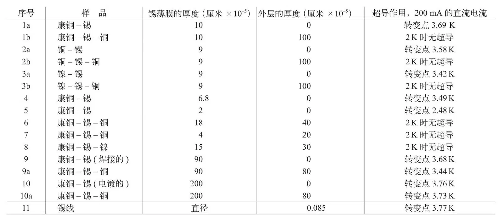

英文
英文伯顿
编者按
1911年海克·卡默林·昂内斯发现了超导电性，他发现当温度低至绝对零度附近几度时固体汞的电阻会消失。随后另外一些材料诸如锡和铅也很快被发现是“超导体”，正如此后人们所知道的那样，但是当时并未能就这一现象给出解释。这篇文章中，多伦多大学的伯顿指出了超导理论的一个重要的限制条件：超导材料例如锡膜如果被夹在两层非超导的材料之间时，会失去它的超导电性。伯顿还指出这个效应只适用于足够薄的超导薄膜，厚度应小于或者等于1微米。 英文
关于高频电流与超导电性现象之间关系的实验促成了在多伦多进行的对超导金属膜的研究。（锡）膜是在非超导材料制成的细线表面“镀锡”形成的：在早期的实验中，我们是将厚度为2×10–4厘米的锡的镀层“包裹”在直径为0.016厘米的康铜丝上。按这种方法，我们得到了一个等效的超导金属的薄圆筒，而且当温度低于所用超导元素的转变温度时，整个薄圆筒的电阻会变为零[1]。 英文
为了进一步研究高频电流的效应，我们给这类镀丝样品镀上其他一些没有超导电性的金属，如铜和镍；例如，在镀了锡的康铜丝外再镀上铜，作为芯的几种金属丝的直径如下：康铜，0.056厘米；铜，0.040厘米；镍，0.045厘米。 英文
我们最初做的实验是为了证实这些样品对直流电的反应，即普通的超导电性测试，在实验中我们发现，当这些锡膜镀上非超导金属膜（例如铜或镍）时，它们就不再显示超导电性。虽然这个奇怪的结果只有在膜非常薄时才能得到，但多次的重复实验都倾向于表明这个结果正确无误。下表显示出这种现象的规律：到现在为止，我们只用这种方法对超导体锡做了试验。 英文

我们发现，当锡膜厚度增加到一个点时，锡膜的超导性能不再因为表面镀层而丧失。这种现象对构造一个令人满意的超导理论无疑是极其重要的，这是处理金属电导时需要重点考虑的一个问题。威廉和麦色纳正在进行这项研究。 英文
（沈乃澂 翻译；郑东宁 审稿）